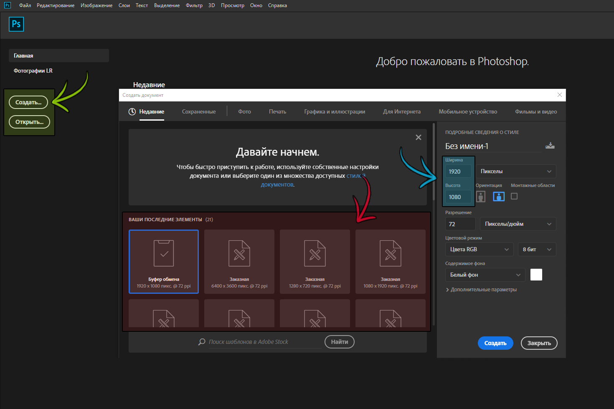
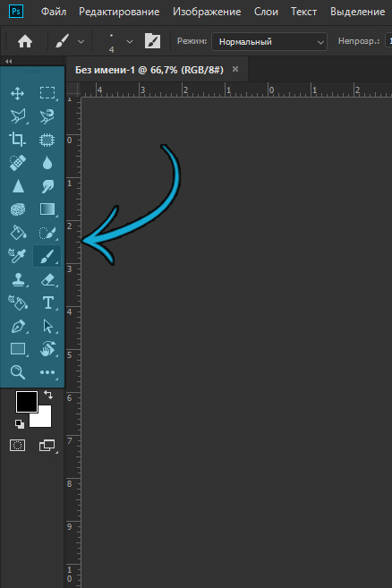
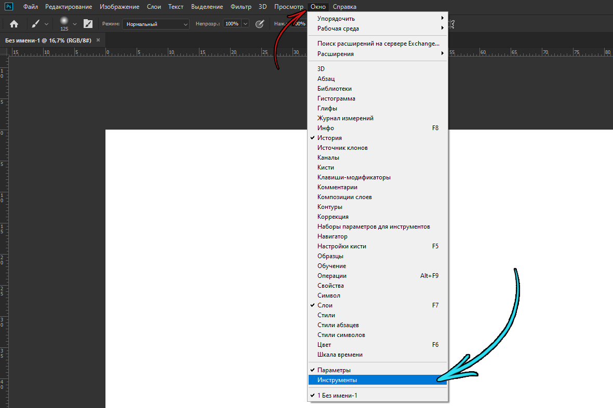
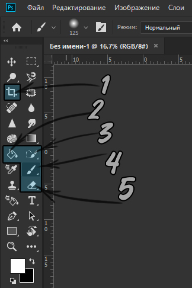
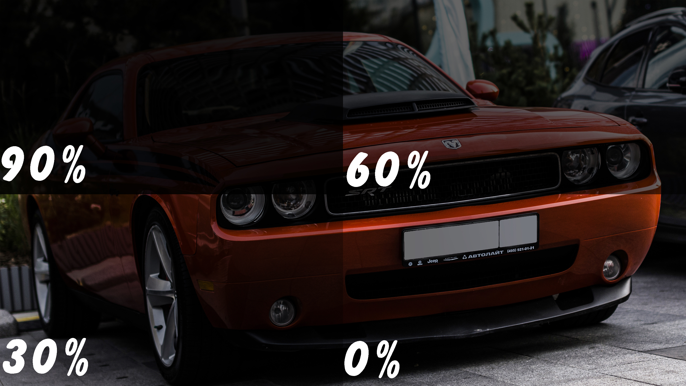
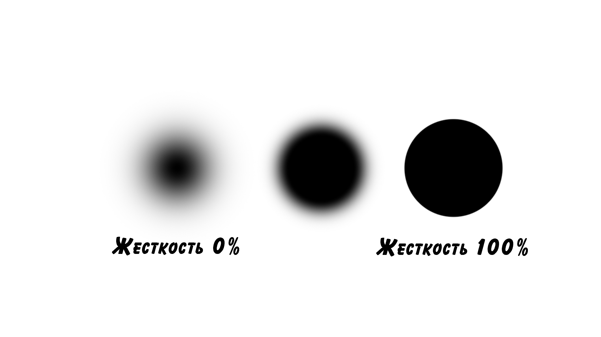
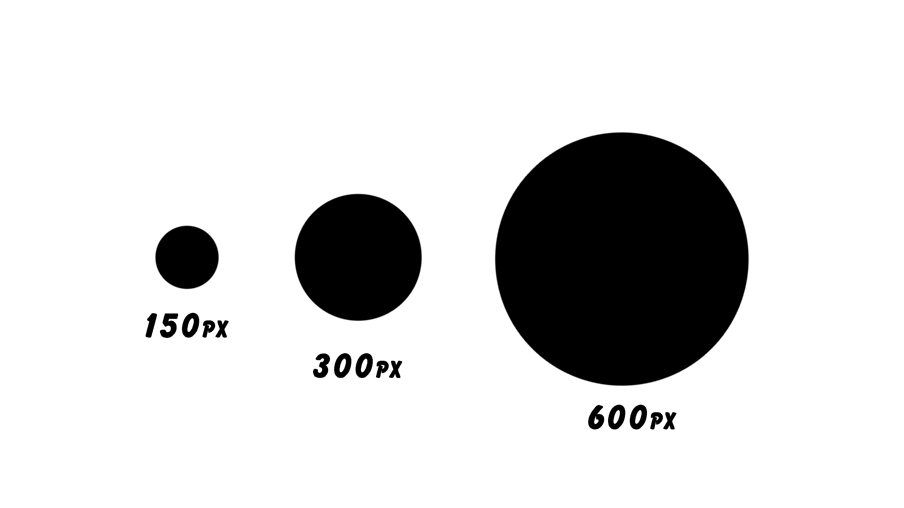

Вступление:
Перед началом работы в программе Adobe Photoshop ( на иллюстрациях будет демонстрироваться версия CC 2019 ) необходимо создать документ. Для этого можно воспользоваться горячими клавишами [Ctrl + N] или нажать на кнопку “Создать...” ( выделено зеленым цветом ) в левом верхнем углу.


В панели разрешения ( выделено голубым цветом ) укажите желаемую длину и ширину будущего документа, эти параметры можно задать как пикселями, так и сантиметрами ( для дальнейшей печати фотографии ).
Красным выделена область, содержащая шаблоны Ваших последних документов. Чтобы приступить к работе с документом, нажмите “Создать”, в правом нижнем углу окна.
Чтобы открыть уже готовый документ или фотографию можете нажать кнопку “Открыть...” выделено зеленым цветом ( горячие клавиши [Ctrl + O] ) и указать путь файла или просто перетащить его с рабочего стола
Если у Вас нет панели инструментов в левой части экрана, как показано на рисунке, ( выделено зеленым цветом ) нажмите на вкладку “Окна”, в верхней части экрана, из выпадающего списка, выберете пункт “Инструменты”. Панель появится в левой части экрана.

Основные инструменты:

Под цифрами, изображенными на рисунке, Вы видите инструменты:
Кадрирование [C]
Заливка [G]
Быстрое выделение [W]
Кисть [B]
Ластик [E]
Инструмент “Кадрирование”
С помощью этого инструмента Вы сможете кадрировать Ваш документ, с возможностью использования любого разрешения ( соотношение сторон ), от самых частых ( 16:9, 4:3, 1:1, 1:2) до самых необычных, установленных Вами (2:7, 7:3) Эти цифры показывают отношение ширины документа к его высоте, таким образом файл, имеющий разрешения 4800х2700 или 1920х1080 (Full HD) пикселей имеет соотношение сторон 16:9, такое разрешение является универсальным, для просмотра этого документа на мониторе компьютера или экране телефона.
Вы можете устанавливать шаблонное разрешение, нажав на правую кнопку мыши и выбрав там подходящее соотношение сторон.
Чтобы установить разрешение вручную, укажите его в соответствующих полях, в верхнем левом углу, где первое поле - ширина документа, правое - его высота.
Вы также можете очистить кадрирование в соотношении, после этого, при использовании этого инструмента, Вы будете вручную ( на глаз ) устанавливать ширину и высоту документа. Чтобы это сделать, нажмите на кнопку “Очистить”, справа от полей ввода.
Инструмент “Заливка”
Инструмент позволяет вам быстро окрасить определенную область однотонным цветом. С помощью поля “Непрозрачность” Вы сможете отрегулировать прозрачность, где 100% - абсолютно непрозрачная заливка, а 0% - абсолютно прозрачная.
С помощью поля “допуск” Вы сможете контролировать цветовой диапазон работы инструмента. При выставлении максимального значения, (255) инструмент будет вне зависимости от содержимого файла, выполнять заливку всего холста. При выставлении минимального значения, (0) инструмент будет выполнять заливку точного цвета, на пиксель которого Вы выполнили нажатие. Рекомендуемое значение заливки - 20.
Инструмент “Быстрое выделение”
Инструмент предназначен для быстрого выделения области. Он представляет из себя круг, с плюсом или минусом, в зависимости от функции инструмента ( “+” выделение, выделяет нужную область, “-” обратное выделение, отменяет выделение уже выделенной области )
Данный инструмент работает по принципу выделения похожих по цвету областей, сравнительно тех, что выделены заранее. Это значит, что если необходимо удалить однотонный задний фон, нужно провести по нему этим инструментом, пока выделение не будет ограничивать фон.
Полезные горячие клавиши для выделения:
[Alt] - Выделение меняется на обратное выделение
[Ctrl + Shift + i] - Инверсия выделения ( То, что не было выделено становится выделенным, то, что было выделенным - отменяет свое выделение )
Инструмент “Кисть”
Кисть - один из главнейших и часто используемых инструментов. Она используется, как при обработке фото, так и при создании рисунков. Однако я не советую использовать PhotoShop для создания логотипов, текстов и прочих векторных работ, так как для данного вида работ существует программа Adobe Illustrator.
Кисть имеет большое количество настроек:
Непрозрачность: одна из важнейших настроек кисти, представляет из себя процент от абсолютно непрозрачной кисти ( 0% - прозрачная кисть, 100% - непрозрачная кисть ). Данный параметр можно быстро выставить, нажав цифру на клавиатуре, где 0 - 100%, 9 - 90%, 8 - 80% и т. д.

Жесткость: определяет жесткость границы кисти. это значит, что при максимальной жесткости, при нажатии круглой кистью, появится четкий круг, а при минимальной жесткости - рассеянный, или градиентный от центра.

Форма кисти: представляет из себя контур, которым Вы сможете рисовать или создавать объекты. По умолчанию кисть имеет круглый контур, значит рисовка данной кистью будет представлять из себя линию с округленными концами.

Размер кисти: размер формы кисти, его легко изменять при помощи быстрых клавиш “[“ и “]”
Настройки параметров инструмента можно открыть, выбрав кисть, перетащив ее на Ваш документ и кликнув по нему правой кнопкой мыши. На документе появится окно с настройками кисти, где Вы сможете задать размер, форму, жесткость.

Под панелью инструментов находится два квадрата, накладывающихся один на другой, где верхний квадрат - цвет кисти, а нижний - фон, который будет проявляться при стирании документа ластиком.
Инструмент “Ластик”
Инструмент Ластик нужен для стирания слоя, это может быть как фотография, так и рисунок. Ластик представляет из себя противоположность Кисти и имеет такие же настройки.